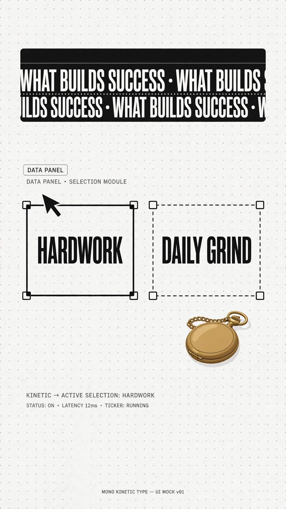
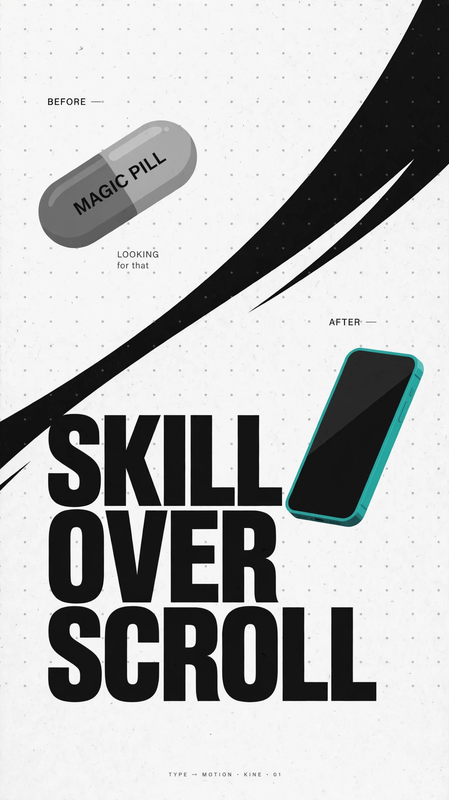
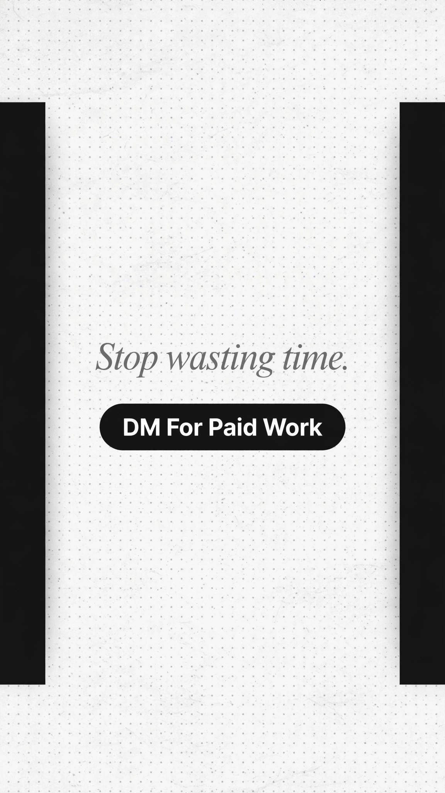

Mono Kinetic Type
Dashed selection boxes with anchor handles, swoosh wipes, strict monochrome. The workshop aesthetic — process as content.
Source: “Skill over Scroll” kinetic-typography reel (pure type, no speaker)
Palette
Click any swatch to copy its hex.
Type system
Keyword — heavy grotesque
NO MAGIC PILLS
Quote — italic serif
“Here is the truth.”
Selection box
HARDWORK ▢
Caption / subtitle system
No subtitles — the type IS the content. Marquees and letter-by-letter typing carry the narration.
.select-box { border: 1.5px dashed #141414; position: relative;
display: inline-block; padding: 14px 28px;
font: 900 64px/1 "Arial Black", sans-serif; color: #141414; }
/* anchor handles via ::before/::after + box-shadow copies */
.marquee { overflow: hidden; white-space: nowrap; }
.marquee span { display: inline-block;
animation: scroll 12s linear infinite; }
@keyframes scroll { to { transform: translateX(-50%); } }
Motion grammar
- Dashed selection boxes with anchor handles; arrow cursor drags them; text types in letter-by-letter.
- Diagonal swoosh wipes, kinetic marquee R→L with motion blur, scale-pop on boxes.
- Slow blurred-blob drift at edges. Hard cuts, ~2–2.5s per beat.
- Closer: black side bars squeeze in (letterbox close) → end card.
Layout rules
- Paper #F5F5F3 + faint dot grid (1.5px dots, 28px spacing).
- Strictly monochrome — ONE colored 3D object per video as the accent (teal phone / brass watch).
- ~7 beats per 16s; type always the hero, never decoration.
Why use it
Type-driven storytelling with zero speaker needed. The monochrome restraint + one moving device (selection boxes) makes it cheap to produce and instantly recognizable.
Best for: Motivational content, “hard truths” posts, editor portfolio pieces, quote explainers
Scenario examples
Mockup frames in this style's exact palette and type language. Video versions come later.

Hook / title card — Dashed box + cursor drag
Pending —
regenerating
regenerating
Kinetic beat — NO MAGIC PILLS — regenerating

Stat / data panel — Marquee + dashed boxes

Product / comparison panel — Swoosh wipe before/after

End card / CTA — Letterbox close